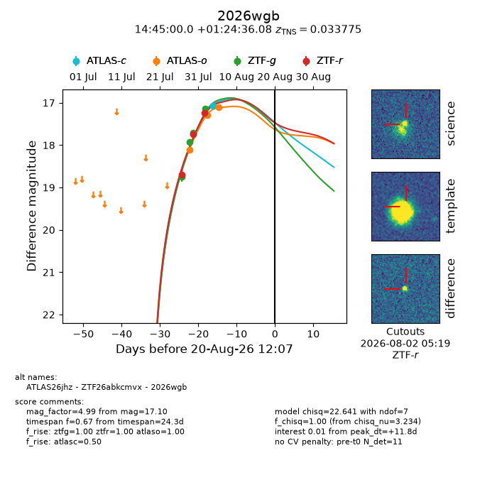
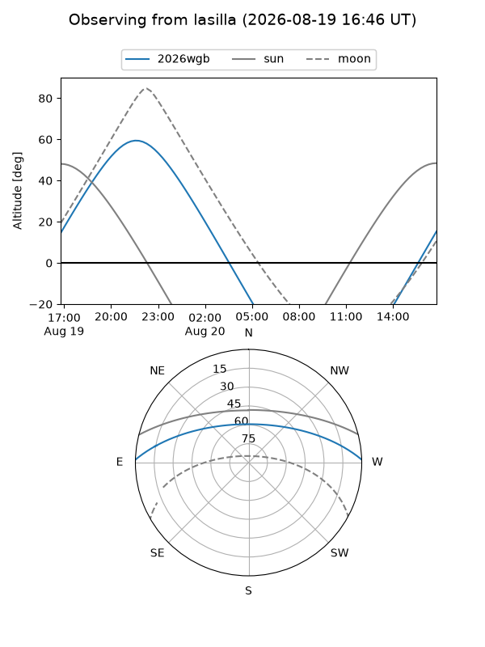
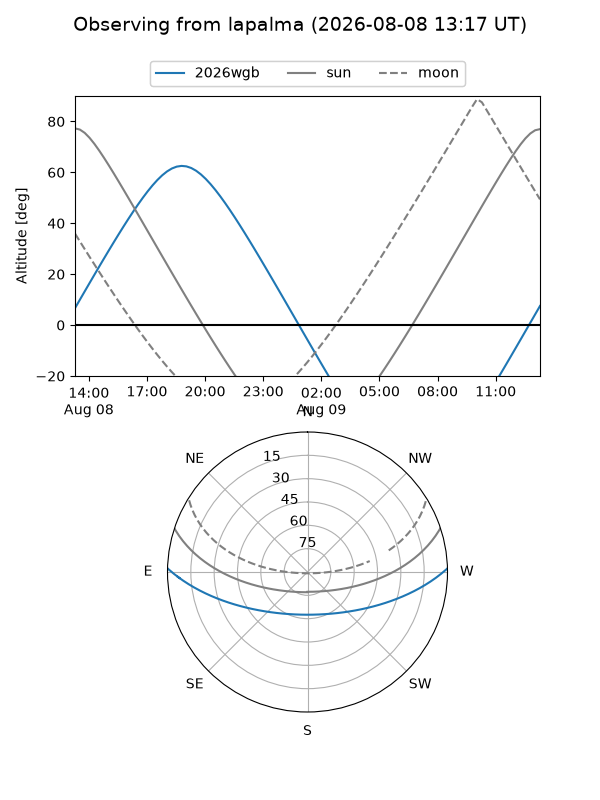
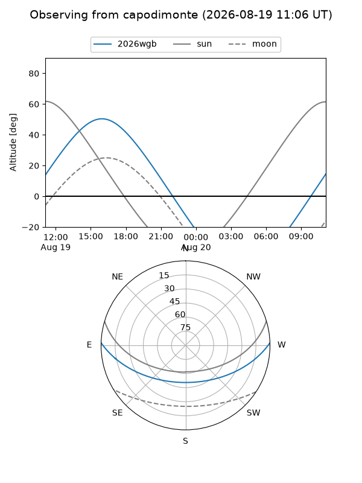
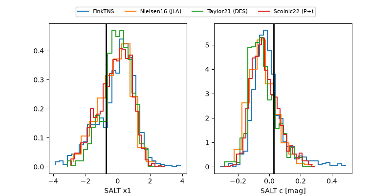

2026wgb
Target 2026wgb at 2026-08-20 12:10
Aliases and brokers:
FINK-ZTF: ztf.fink-portal.org/ZTF26abkcmvx
Lasair-ZTF: lasair-ztf.lsst.ac.uk/objects/ZTF26abkcmvx
ALeRCE-ZTF: alerce.online/object/ZTF26abkcmvx
YSE-PZ: ziggy.ucolick.org/yse/transient_detail/2026wgb
TNS name: wis-tns.org/object/2026wgb
Direct TNS query: direct search
alt names
ZTF26abkcmvx (ztf,fink_ztf)
2026wgb (tns,yse)
ATLAS26jhz (atlas)
Coordinates:
equatorial (ra, dec) = 221.2500,+1.41002
equatorial (HMS+DMS) = 14:45:00.00,+01:24:36.08
galactic (l, b) = (354.3566,+52.55433)
Flags:
TNS type: SN Ia
TNS redshift: 0.0338
peak dt: +11.8
Photometry:
last atlasc=17.07, atlaso=17.10, ztfg=17.13, ztfr=17.25
1 atlasc, 3 atlaso, 4 ztfg, 3 ztfr detections
Lightcurve

Visibility



Additional plots
